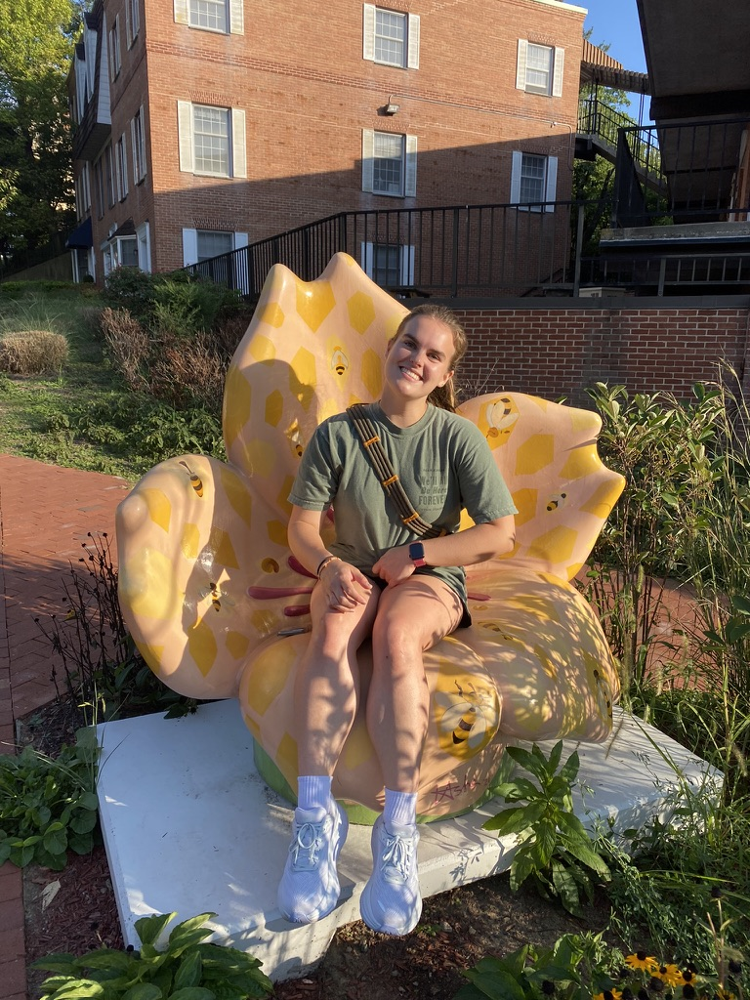
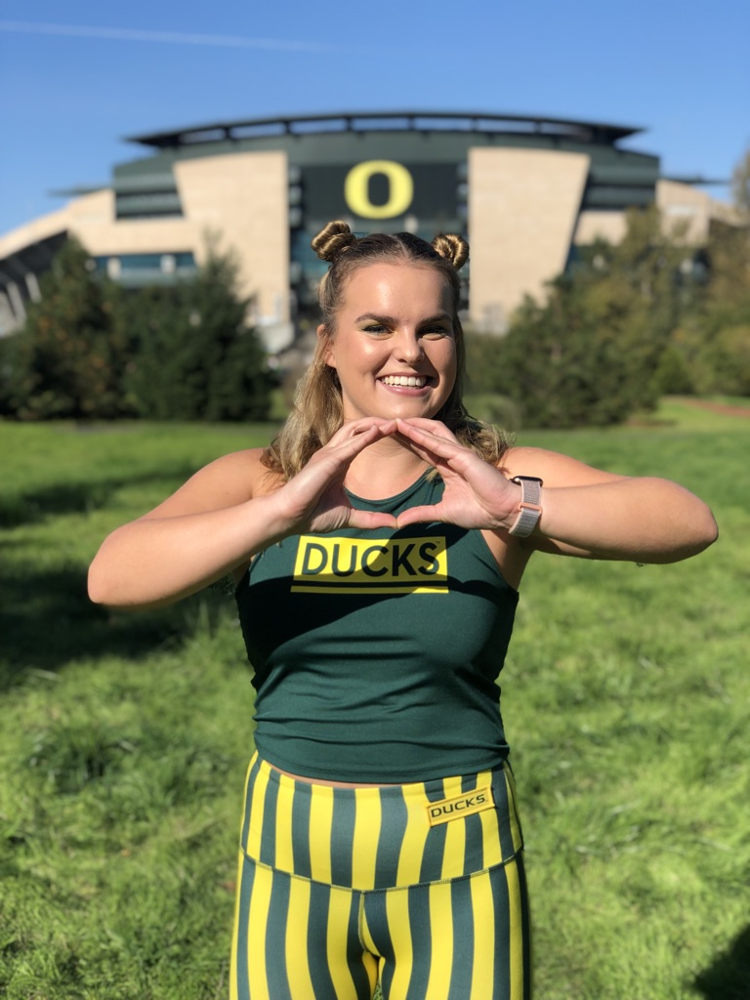
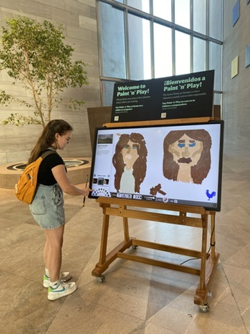
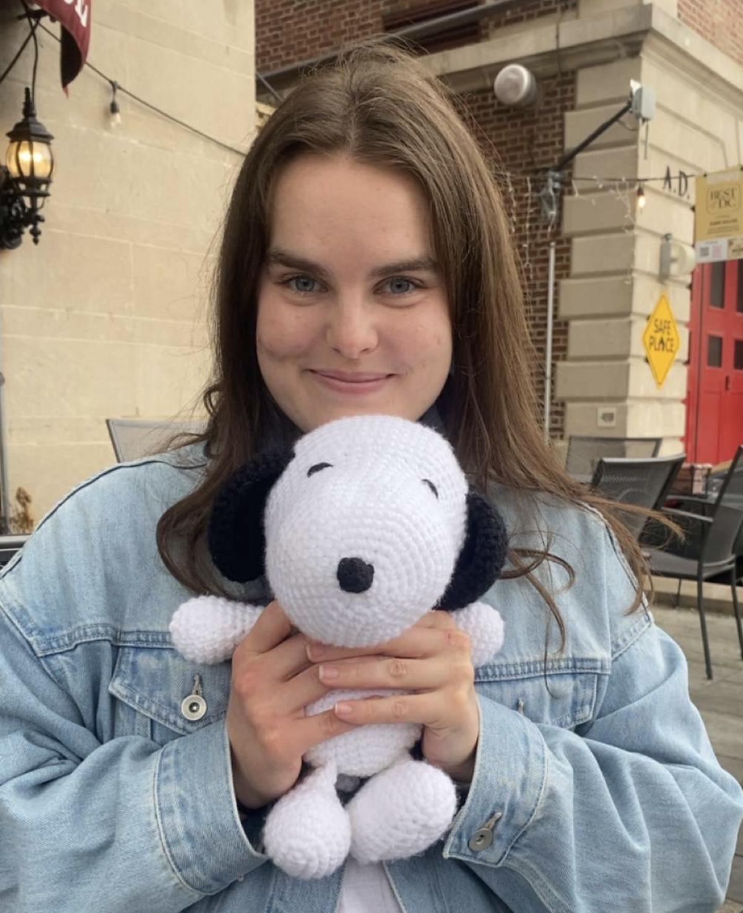
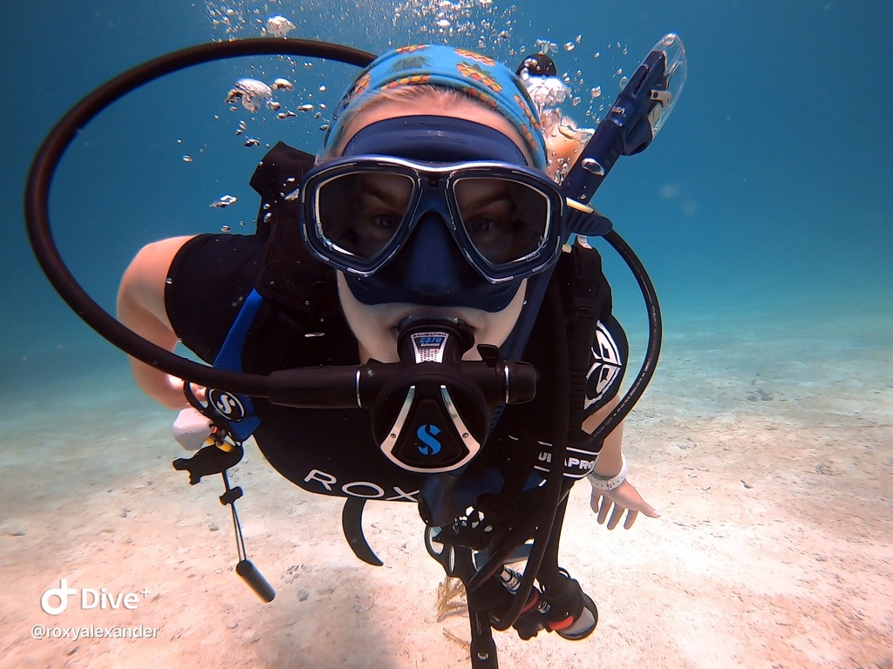

About Roxy

Roxy Alexander is a disability scholar, advocate, and AI Ethicist committed to re-designing a world that is inclusive and equitable for all.
Roxy was born in Boulder, Colorado at the base of the Rocky Mountains. She moved to the Pacific Northwest when she was 18 to attend the University of Oregon. She began her undergraduate education as a premed student, but quickly fell in love with asking questions about the world and understanding the complexities of human experience through a critical lens. Her love for critical theory has taken her to beautiful places, including to the capital of the United States: Washington, D.C.
Recently, Roxy graduated with her masters degree in Philosophy, Social Policy and Applied Ethics from American University. Roxy's work as a disability rights activist involves advocating for policy change both in education and health care.
She is passionate about uplifting marginalized voices, which is reflected in her academic work, her podcast, and her business. She is excited to share her work with you and hopes you find it engaging and thought-provoking!
Graduate Education, MA
-
Masters of Arts in Philosophy; Social Policy and Applied Ethics -
Artificial Intelligence: Ethics and Society Certificate
In her First year, Roxy joined the Department of Philosophy and Religions Graduate Students Council (GSC) where she served as Secretary. As a member of the GSC, Roxy launched a community aid project — The Graduate Student Library— with the goal of providing graduate students access to texts often assigned in grad courses for free. Along with her work on the GSC, she revived and co-led AU's Minorities and Philosophy chapter as chapter president. Additionally she co-chaired the Student Tenure Hiring Committee, ensuring student wishes were represented in the hiring of a tenure-line position for an AI Ethicist. In the spring, Roxy organzied the annual Hurst Lecture —featuring keynote speaker Dr. José Medina — and moderated the Hurst Lecture Graduate Panel.
In her Second year, Roxy has led the GSC as the Graduate Representative, responsible for attending faculty meetings as the voice of graduate students, ensuring clear communication between students and faculty, and organizing community events and workshops. Notably, Roxy has organized a series of workshops: Writing for Academics, What to Know About Conferencing, and Publishing 101.
Additionally, Roxy holds a Fellowship with AU Humanities Truck, bringing philosophical dialogue into DC community spaces. Roxy and her co-collaborator have partnered with the American Red Cross and Global Kids to host the podcast, Philosophy Across Generations as well as attend local events, uplifting the DC community.
During her time at AU, Roxy has worked as a Graduate Teaching Assistant for Introduction to Bioethics, Introduction to Western Philosophy, and Introduction to Formal Logic.
University Education, BA

Roxy received her BA in Philosophy and minored in Legal studies from the University of Oregon. Upon graduation, Roxy recieved honors, Cum Laude, and the Phi Beta Kappa distinction. Her honors thesis focused on the Epistemic Harm ADHD Girls face in the United States K-12 Education System. Her scholarship engaged with the work of José Medina, Kristie Dotson, Judith Butler, Simone de Beuvoir, and more. Largely phenomenological, this work centered the testimony of ADHD girls educated within the U.S. K-12 system, along with the testimonies of paraeducators from the larger Portland area.
Roxy's commitment to uplifting marginalized voices goes beyond the walls of academia. In her first year at UO, Roxy served as the Sexual Assault Prevention Chair for Sigma Kappa, facilitating informational workshops, attending panhellenic meetings, and working individually with survivors of sexual violence. During her second year, Roxy managed "Thots About Women's Health," a social media blog dedicated to critiquing, as well as bridging, informational gaps on women's health and gender violence.
Roxy also served as a member on UO Mock Trial, and as a Junior joined Fugue, the UO Women's Frisbee Team. Senior year, Roxy became a member of UO's Minorities And Philosophy chapter and the Philosophy Club. Her membership in these activities would later inspire her leadership in graduate school.
Empowering Younger Generations
Special Educational Assistant

Roxy worked as a Special Educational Assistant at a Middle School from 2023 to 2024, supporting students with diverse learning needs and contributing to an inclusive educational environment. While there, Roxy was an assistant track coach (specializing in relays, sprints, and hurdles). She also chaired the costume department for the school play, organized school wide functions —including the Fall dance and the Middle School Continuation reception.
Camp Counselor
Roxy spent the summer before her Graduate studies working as a camp counselor at Camp Fire Wilani, where she facilitated the junior counselor program, fostering a supportive and enriching environment for teenagers to develop leadership skills. She also organized recreational activities, supervised daily routines, and provided mentorship to campers, ensuring a safe and enjoyable experience for all participants.
Raquella.Crochets

At the height of the pandemic, disillusioned by fast-fashion, Roxy fell in love with the practice of taking a simple ball of yarn and turning it into a unique, long-lasting piece of clothing. After crafting a hoard of hand-made crocheted garments for friends and family she decided her talent would be better shared with the world. She sold her work sporadically until late 2024 when she learned of her dads housing instability. She took him into her home that she shared with her then partner until her dad could find a job and save enough money for an apartment of his own. In the meantime, she supplemented her small graduate stipend by selling her work at local DC maker markets. At the start of this year she launched Raquella.Crochets, a small-business based in Washington D.C. with a social impact model. Since the launch, she has sold her work at local markets, shipped across the country, and gained a healthy online following.
Dive Master

Roxy is a PADI certified Dive Master.
Roxy's love of diving began at 10 years old when she became open water certified. Land locked in the state of Colorado, Roxy had limited access to diving opportunities, but she remained passionate about the sport and sought out every chance to dive whenever possible. At 18, Roxy's father moved to Florida. There, Roxy was able to work as a deck hand on a dive boat and earn her Rescue Diver Certification and her Dive Master Certification.